| 日付 | 2025年11月2日（日） |
|---|---|
| 山域 | 谷川 |
| メンバー | 家族（妻） |
| 山行形態 | 日帰り |
| アクセス | 車 |
| ルート (Map) | 三国峠上州口駐車場 (7:54) - (8:33) 三国峠 - (9:25) 三国山 - (11:00) 大源太山 (11:42) - (13:05) ベンチ (13:18) - (13:34) 三国峠 - (14:05) 三国峠上州口駐車場 |
この3連休は比較的晴れ予報なので、中日の日曜日に少し遠出して
谷川連峰の三国山～大源太山に行ってみることにする。
谷川連峰には大源太山という名の山が2座ある。
1座は谷川連峰の北東にあり、2009年に登った。
今回はもう1つの大源太山に三国山経由で登ることにする。
三国トンネル手前の駐車場に車を停める。標高1070m。
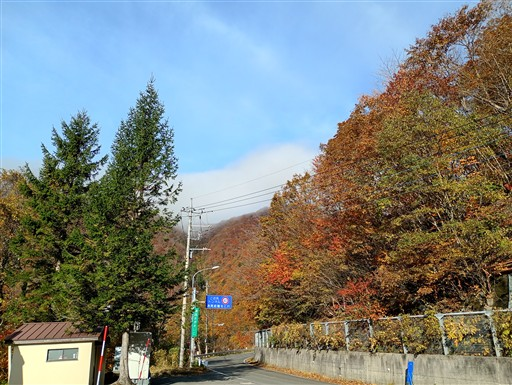
周囲は紅葉がきれいだ。もうとっくに終わっていると思っていたが
登山口の辺りはまさに今が旬だ。
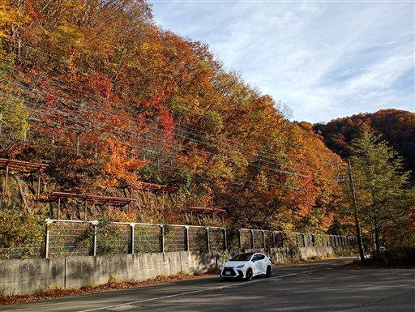
登山口は右のトンネルの右側にある。
右側の橋は封鎖されていて、どうやって行くのだろう、と少し悩む。

ちゃんと登山者用の説明書きがあった。
右側の橋は渡ってはいけないようだ。古くて崩落の危険があるのだろう。
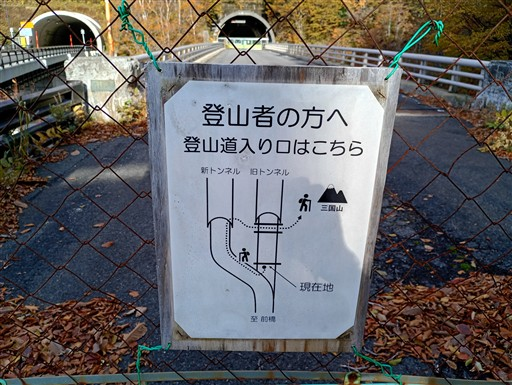
トンネルの前を横切ると登山口に到着する。
古くて立派な標識が立っている。
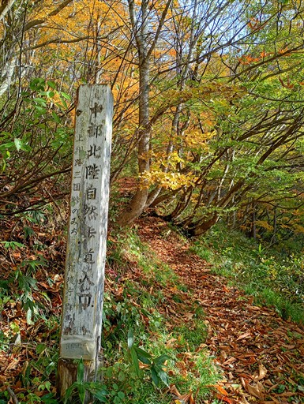
周囲は紅葉に包まれた登山道。
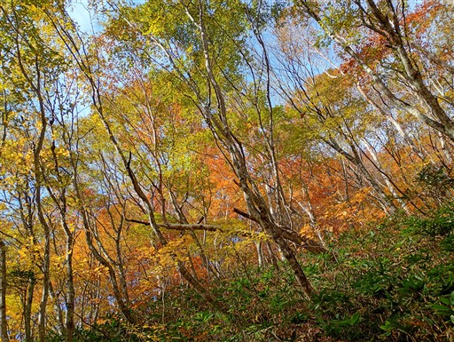
気持ちの良い道を歩いていく。
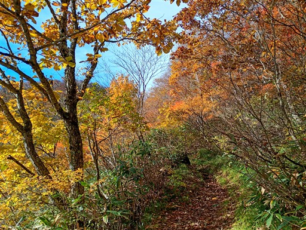
赤、黄色と非常に鮮やかだ。

三国峠に到着。峠には三国権現が祀られている。
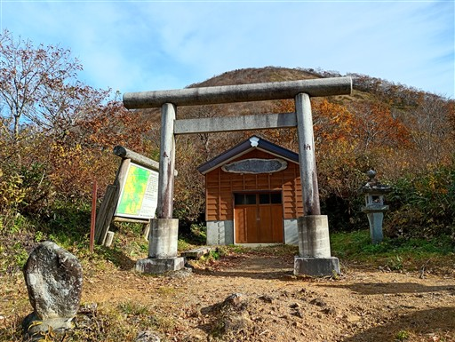
峠周辺の景色はこのような感じ。
ここは群馬と新潟を結ぶ、極めて重要な峠道だった。
今では、清水峠にその地位を譲っているが、今でも下を通る三国トンネルは重要な道だ。
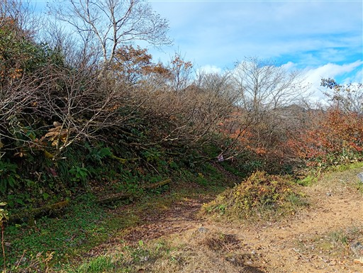
三国峠を越えた人々の名前が刻まれた石碑。
坂上田村麻呂から始まり、上杉謙信や伊能忠敬の名前も刻まれている。
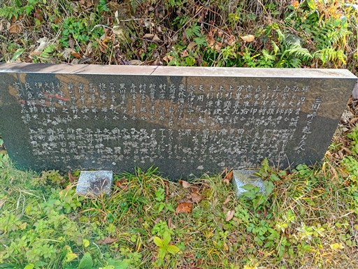
ここから三国山に向かって尾根道を進む。
周囲は灌木帯になるが、ここも紅葉がすばらしい。
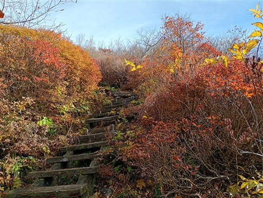
2組の登山者と出会う。全体的に人通りは少ない。

大きく視界が広がる。眼下に三国街道が見える。
昔は谷底に道があり、今でも集落があるが、国道は山の中腹に付けられている。
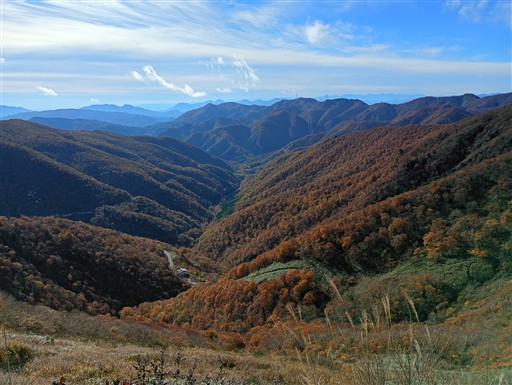
傾斜が緩み、笹原が広がる。

振り返ると、こちらも素晴らしい展望。
眼下が三国峠、正面右に見えるのは稲包山、遠くに見えているのは浅間山だ。
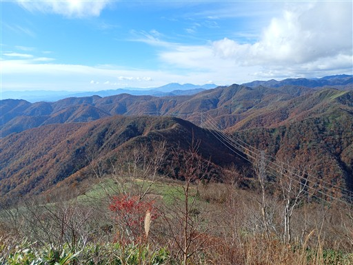
土が流れて階段が傾いてしまっている。
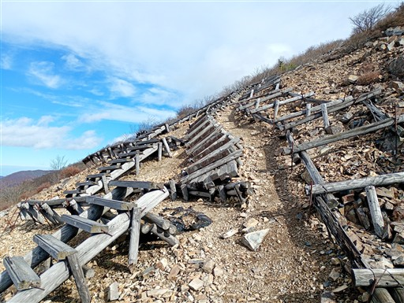
眼下に見えるホテル群。苗場スキー場だ。
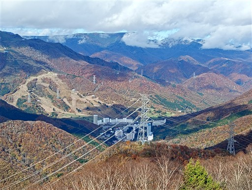
延々と続く木段。段差があって結構きつい。
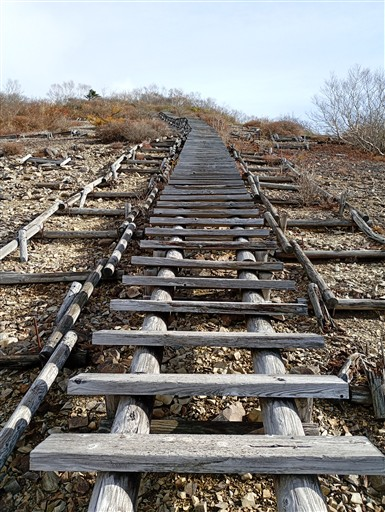
三国山に到着。標高1636m。
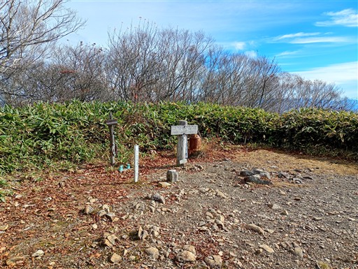
山頂からは南側の展望が素晴らしい。
正面に見えているのは赤城山。
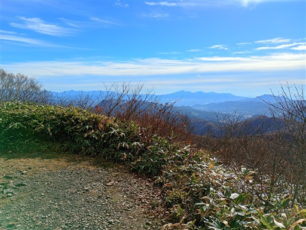
左から子持山、小野子山、榛名山。どれも懐かしい山々だ。
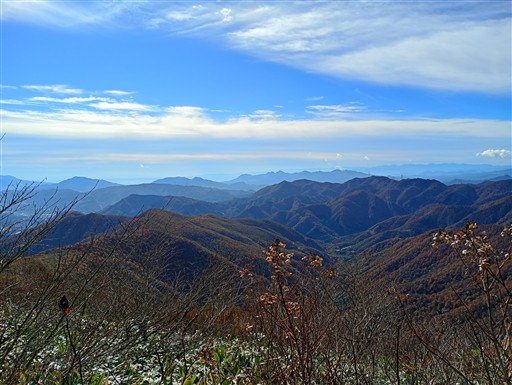
山頂にある幸福の鐘。だいぶ錆びている。
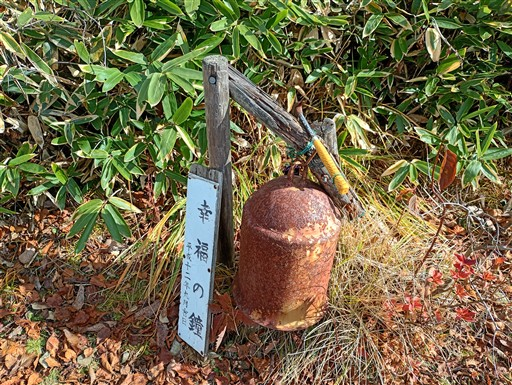
ここから大源太山まで小さなアップダウンが続く稜線だ。
三国山までの道と異なり、少し登山道が細くなる。
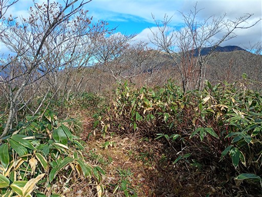
目の前に平標山と仙ノ倉山が見えてきた。谷川連峰の主稜線だ。
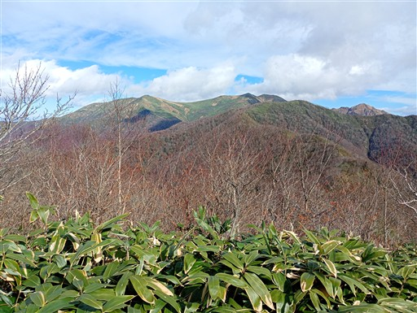
万太郎山～谷川岳の稜線も遠くに見えている。

さらに右手を見ると、遠くに上州武尊山、日光、皇海山などが見えている。
空気が澄んでいて、遠くまでくっきりと見える。
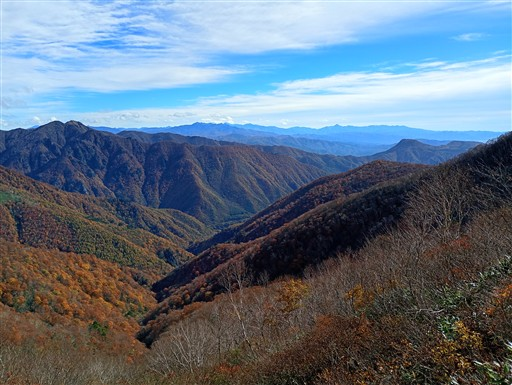
目指す大源太山がだいぶ近くなってきた。正面右の丸い山だ。
もう1つの大源太山は鋭く尖った山だが、こちらの大源太山は丸くて、山容はだいぶ異なる。
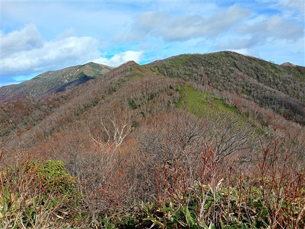
アップダウンを繰り返す尾根道。ずっと素晴らしい展望が広がる。
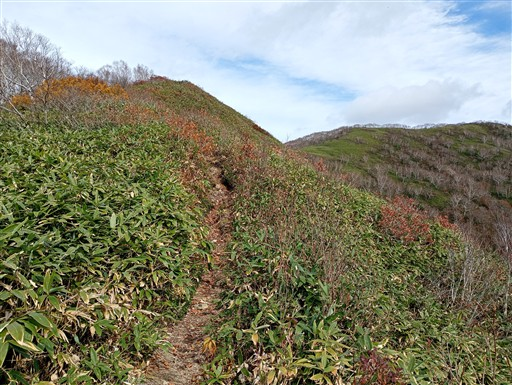
真っ赤な紅葉。あちらこちらにあり、よく目立つ。
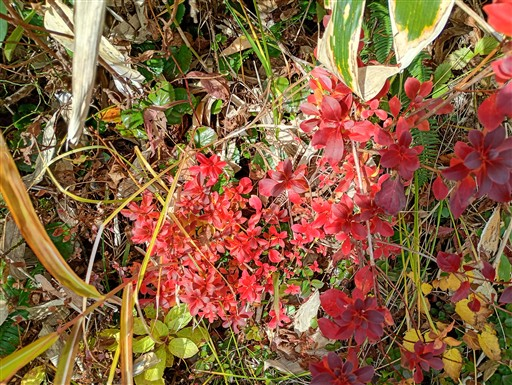
三角山に到着。大源太山手前の小ピークだ。
ここから西に下る道があり、ここを通って周回コースを歩く人も多い。
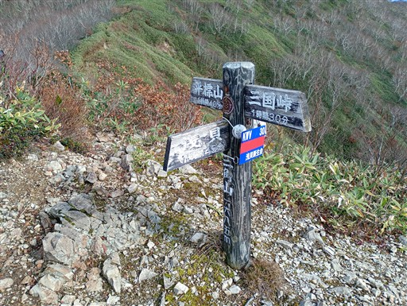
もちろん展望は素晴らしい。
正面奥の赤城山、その手前は吾妻耶山。かつて谷川連峰を眺めるために登った山だ。
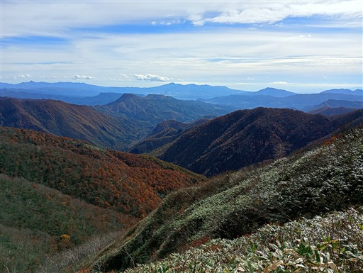
こちらは苗場山。まっ平らな山頂はよく目立つが、遠くから眺めて美しい山ではない。
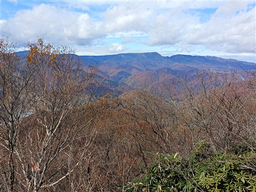
大源太山直下には、一箇所だけヒノキが自生している。
なぜここだけに生えているのだろう？
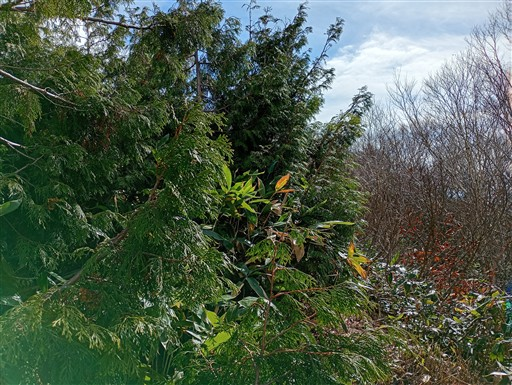
歩いてきた稜線を振り返る。左端の山頂が平らなピークが三国山だ。
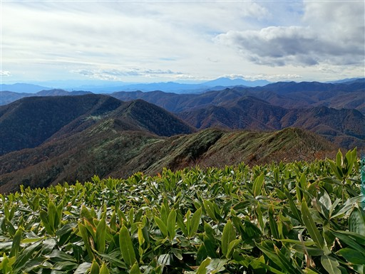
大源太山に到着。標高1764m。
正面に見えるのは仙ノ倉山。
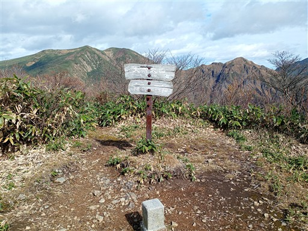
そして、エビス大国ノ頭、万太郎山、谷川岳と続く稜線が見える。
谷川連峰をこんな近くから眺めたのは初めてだ。
どれも特徴的な山容の山々で、この稜線を是非歩いてみたくなった。
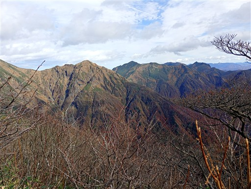
山頂で1時間ほど昼食休憩を取ったら下山を開始する。
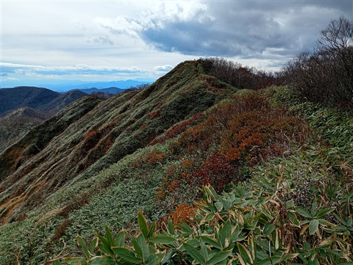
時間に余裕があるのでベンチで腰掛けておやつ休憩をとり、景色を眺める。
午後になりだいぶ雲が出てきた。
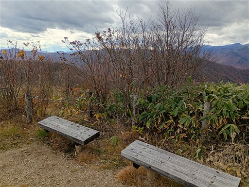
紅葉の木段を下る。
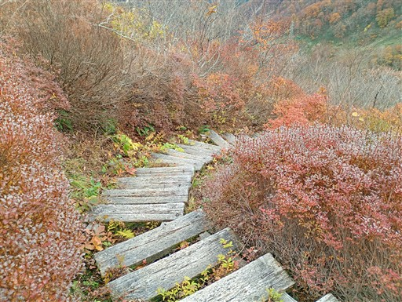
美しい黄葉。何の植物だろうか？

無事下山。周囲の紅葉を眺める。
紅葉を眺める観光客もチラホラみられる。
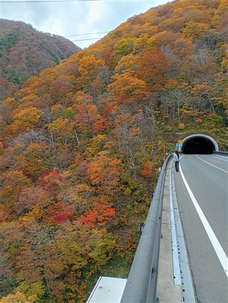
閉ざされた橋の向こう側に広がる斜面。

クロソイド記念碑。運転しやすい道の曲線がクロソイド曲線らしく、
初めてそれが採用された道がこの国道17号線らしい。

駐車場に無事戻ってくる。
思ったほど晴れなかったが、迫力ある谷川連峰の風景と群馬の山々、
そして美しい紅葉が眺められる、静かで素晴らしい登山道だった。
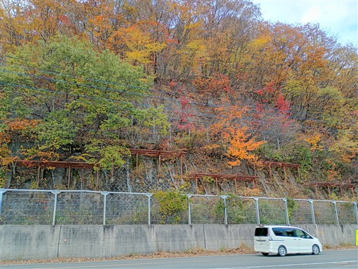